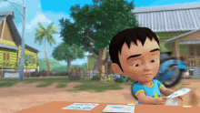
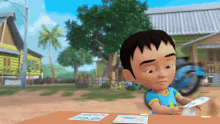

Sejarah Upin & Ipin
Upin & Ipin adalah sebuah serial televisi animasi kartun anak-anak Malaysia yang dirilis pada tanggal 14 September 2007 yang ditayangkan di TV9, RTM2, MNCTV dan Kids TV. Serial ini yang diproduksi oleh Les' Copaque Production. Awalnya film ini bertujuan untuk mendidik anak-anak agar lebih mengerti tentang Ramadan sebelum film Upin & Ipin Geng: Pengembaraan Bermula dirilis. Kini, Upin & Ipin sudah memiliki tujuh belas musim tayang. Di Indonesia, Upin & Ipin hadir di MNCTV dan Kids TV secara bersamaan, juga ditayangkan di stasiun televisi Berlangganan yaitu Disney Channel. Serial ini berdurasi selama 10-20 menit dalam setiap episodenya.
Asal-Mula : Awalnya, Upin & Ipin ditayangkan khusus untuk menyambut Ramadan pada tahun 2007 untuk mendidik anak-anak mengenai arti dan kepentingan dari bulan suci Ramadan. Kata Safwan, "Kami memulai seri animasi empat menit ini untuk menguji penerimaan pasar lokal serta mengukur bagaimana reaksi pada kemampuan penceritaan kami".Sambutan meriah terhadap kartun pendek ini mendorong Les' Copaque agar menerbitkan satu musim lagi menyambut bulan Ramadan yang seterusnya. Nizam percaya bahwa aspek kebudayaan Malaysia yang berlatarkan sebagai sebuah kampung yang sederhana pasti dapat menarik minat pasar internasional. Seperti pada kartun animasi Doraemon asal Jepang yang laris di seluruh dunia meskipun berlatarkan budaya setempat dan bukannya budaya internasional. Dan juga, reputasi Les' Copaque sebagai organisasi dikenal sejak terbentuknya popularitas Upin & Ipin yang bukan saja di Malaysia, namun juga di beberapa negara lain yang meng-import kartun ini khususnya Indonesia.
Alur : Upin dan Ipin merupakan sepasang kembar yang berusia lima tahun (Upin lebih tua lima menit dari pada Ipin) yang tinggal bersama Kak Ros yang berusia delapan belas tahun dan Mak Uda (biasa dipanggil Opah) yang berusia enam puluh delapan tahun di Kampung Durian Runtuh setelah kematian kedua orang tua mereka sewaktu masih bayi. Upin dan Ipin bersekolah di Tadika Mesra yang terletak dalam kawasan kampung, di mana mereka berteman dengan banyak teman yang bermacam-macam tingkah lakunya, seperti Mei Mei yang imut dan berkepribadian cerdas, Jarjit Singh yang gemar membuat humor dan membuat pantun, Ehsan yang cerewet dan suka makan, Fizi (teman Ehsan) yang penuh percaya diri tetapi suka mengejek teman-temannya, dan Mail yang hobi berjualan, suka melamun, selalu membantu ibunya berjualan ayam golek dan pandai berhitung. Kampung Durian Runtuh juga didatangi oleh seorang gadis bernama Susanti yang merupakan pindahan dari Jakarta, Indonesia.

 
